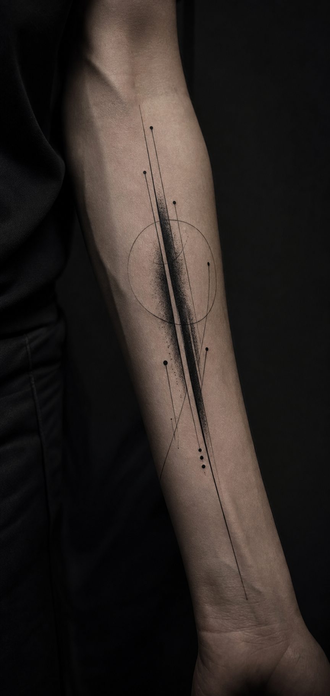

Анкета на сайте
Не перегружаем Telegram-чат вопросами. Клиент проходит короткий визуальный сценарий в стиле Black Carp.
- опыт клиента;
- эскиз или разработка;
- зона тела;
- размер и идея;
- референсы.
Клиент заполняет красивую анкету на сайте. Мастер сразу получает структурированную заявку в Telegram и готовится к диалогу до первого сообщения клиента.

Не перегружаем Telegram-чат вопросами. Клиент проходит короткий визуальный сценарий в стиле Black Carp.
После клика `Перейти в Telegram` сервер сохраняет заявку и сразу отправляет мастеру карточку.
Бот подтверждает получение анкеты, связывает клиента с заявкой и оставляет живое общение в привычном канале.
Для этого форма отправляется не через Telegram deep link, а сначала на наш сервер. Telegram открывается уже после успешного сохранения заявки.
Сайт собирает ответы и файлы.
PostgreSQL хранит данные, файлы лежат отдельно.
Бот отправляет мастеру сообщение в Telegram.
По коду бот связывает клиента с уже созданной заявкой.
Он проходит аккуратный визуальный сценарий на сайте, видит резюме заявки и понимает, что мастер уже получил контекст.
Мастер сразу видит суть проекта и может открыть вложения, взять заявку в работу, запросить уточнения или предложить консультацию.
Раз сервер свой, делаем обычный надежный backend: Node.js API, webhook Telegram, PostgreSQL и хранение файлов на диске или S3-совместимом хранилище.
База хранит структуру и историю. Файлы не кладем в таблицы: в БД только ключи и метаданные.
Статусы нужны не для сложной CRM, а чтобы мастер видел, что уже сделано и где клиент сейчас.
Бот становится рабочим мостом между премиальной анкетой на сайте и живым общением с мастером.
Клиенту удобно. Мастеру заранее понятно, с чем человек пришел. Заказчику можно объяснить ценность без технических деталей.